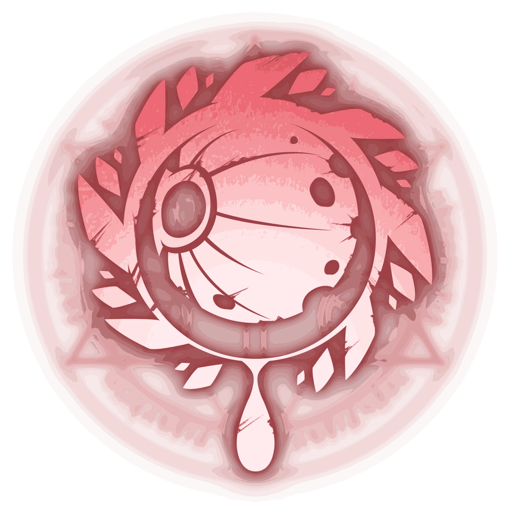
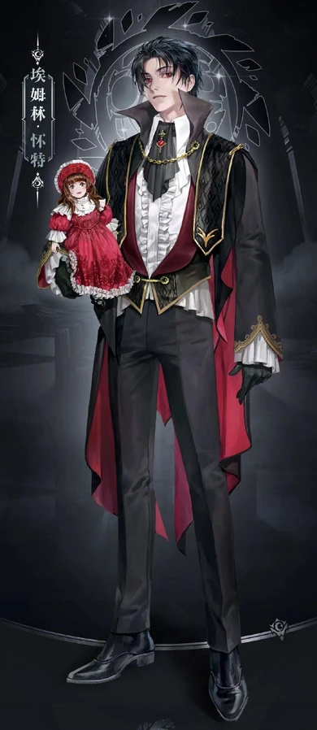
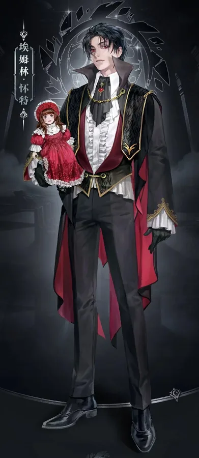

Emlyn White is a Sanguine, a high-ranking deacon in the Harvest Church, and a member of the Tarot Club with the codename The Moon. He, as all Sanguines do, believes in the Moon, or Sanguine Ancestor Lilith. But after being brought to the Harvest Church by Utravsky, he is slowly transferring belief towards Earth Mother.
This page includes major-spoiler information from the linked source article. The fact fields below are transcribed from that article’s character infobox.- ↑ He got the characteristics by trading with Madam Magician [5]
Translation
| Language | Official Translation |
|---|---|
| English | Emlyn White |
| Chinese | 埃姆林·怀特 |
| Korean | 에믈린 화이트 |
| Thai | เอ็มลิน ไวท์ |
Role & affiliations
Aliases and titles
- The Moon
- Bai Ailin
Affiliations
- Sanguines
- Tarot Club
- Harvest Church
Occupation(s)
- Priest
- High-ranking Deacon
Religion(s)
- Sanguine Ancestor Lilith
- Church of the Earth Mother
- Church of the Fool
Pathway & abilities
Pathway: Moon
Recorded progression: Sequence 4: Shaman King (Moon Pathway)

Quotes12 lines
Complete quote entries transcribed from the character’s dedicated wiki Quotes page. The collection includes available Book One and Book Two entries.
What’s wrong with being a vampire? Do you think vampires should be locked up here? Do I have to listen to your nagging and scripture recitals every day? Bullshit, I’m a noble Sanguine, so don’t use such a vulgar name to describe me!
— Emlyn to Father Utravsky, Lord of Mysteries, Chapter 315.
I only like puppets and pure, beautiful girls!
— Emlyn to Sherlock Moriarty, Lord of Mysteries, Chapter 421.
Those fellows are really disgraceful. As noble Sanguine, they should sleep in coffins or stay in their own rooms. Why are they mimicking humans and holding all kinds of gatherings? There’s even dancing!
— Emlyn in Cosmi's night ball, Lord of Mysteries, Chapter 458.
Being a believer because I like ‘Her’ beliefs is completely different from being forcefully turned into a believer through a psychological cue. Even if I do abandon the moon one day and believe in Mother Earth, I also hope that it is a choice that I freely made. It has nothing to do with others; this is the last pride of a Sanguine.
— Emlyn White, Lord of Mysteries, Chapter 465.
If I really choose to make the attempt, it’s definitely not for myself, but for all Sanguine! Resolving this problem is just an additional perk!
— Emlyn to Klein, Lord of Mysteries, Chapter 465.
There are indeed differences between professional researchers and amateur enthusiasts, but from this week onwards, I, Emlyn White, would be a professional researcher… Baron Waymandy has never mentioned anything related to the City of Silver, so I can’t ask him directly. As the secret messiah of the Sanguine who is burdened with secrets, I have to be careful in such matters… Attending class for half a day and going to the cathedral for half a day before accompanying the dolls at night seems to be a pretty good life…
— Emlyn White, Lord of Mysteries, Chapter 514.
One day, I will become a Sanguine Marquis like Lord Nibbs! No, a duke, or even a prince! Only by doing so will I be able to shoulder the responsibility of being the Sanguine’s messiah… Yes, the baron’s remains is only about four thousand pounds; I’ll have a lot of money left. I can even buy a few more dolls and give them some new clothes…
— Emlyn White, Lord of Mysteries, Chapter 540.
Ahem [...] Ma’am Hermit, I have to emphasize that it’s Sanguine, not Vampire. Heh heh, I won’t object it if you call those humans who consume the characteristics of my kinsmen vampires. I would even be very agreeable to it.
— Emlyn to Cattleya, Lord of Mysteries, Chapter 595.
This should be why us Sanguine are very handsome and beautiful.
— Emlyn White, Lord of Mysteries, Chapter 595.
I’m very confident in my intelligence.
— Emlyn White, Lord of Mysteries, Chapter 792.
I’m already very humble. I didn’t mention I would become a Duke or even a Prince… How am I to be the Sanguine’s messiah without being an angel?
— Emlyn's Thought, Lord of Mysteries, Chapter 1009.
The dark, silent environment is still alright, but it’s just a little cold… But without dolls, newspapers, books, and historical documents, this life is meaningless… Besides, the Nighthawks provide me with cow blood, and it tastes nasty. The effects aren’t too good either. I’m already becoming weak…
— Emlyn's Thought, Lord of Mysteries, Chapter 1129.
Image gallery

